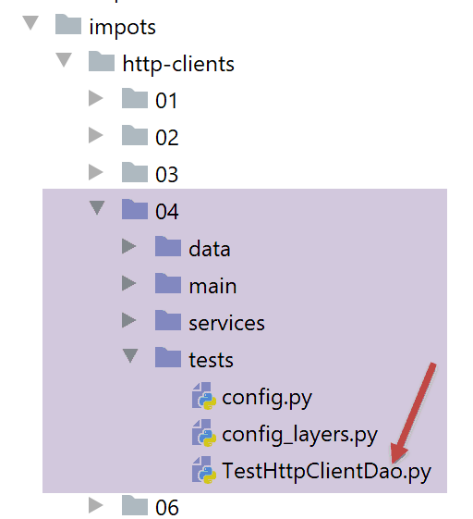

27. Esercizio applicativo: Versione 9
Torniamo alla versione 7 dell'esercizio di applicazione e, invece di scambiarsi stringhe JSON, il client e il server web scambieranno ora XML.
L'architettura rimane la stessa:

27.1. Il server web

La cartella [http-servers/04] viene creata copiando la cartella [http-servers/02], ad eccezione della sottocartella [utilities]. Successivamente vengono modificati i seguenti elementi:

Il file [config] viene modificato come segue:
# dépendances absolues
absolute_dependencies = [
# dossiers du projet
# BaseEntity, MyException
f"{root_dir}/classes/02/entities",
# InterfaceImpôtsDao, InterfaceImpôtsMétier, InterfaceImpôtsUi
f"{root_dir}/impots/v04/interfaces",
# AbstractImpôtsdao, ImpôtsConsole, ImpôtsMétier
f"{root_dir}/impots/v04/services",
# ImpotsDaoWithAdminDataInDatabase
f"{root_dir}/impots/v05/services",
# AdminData, ImpôtsError, TaxPayer
f"{root_dir}/impots/v04/entities",
# Constantes, tranches
f"{root_dir}/impots/v05/entities",
# index_controller
f"{root_dir}/impots/http-servers/01/controllers",
# scripts [config_database, config_layers]
script_dir,
# Logger, SendAdminMail
f"{root_dir}/impots/http-servers/02/utilities",
]
- riga 21: specificare la directory per le utilità che rimangono in [http-servers/02];
Lo script principale [main] cambia come segue:
- L'unica modifica riguarda la riga 23: ora inviamo una risposta XML;
La funzione [xml_response] è definita nel modulo [myutils]:
- Riga 3: La funzione [xml_response] accetta come parametri:
- il dizionario [result] da convertire in XML;
- il codice di stato [status_code] da restituire al client web;
- riga 5: utilizziamo la libreria [xmltodict] per generare la stringa XML;
- riga 8: utilizziamo l'intestazione [Content-Type] per comunicare al client che stiamo inviando XML;
La funzione [xml_response] deve essere importata nello script [__init__.py]:
from .myutils import set_syspath, json_response, decode_flask_session, xml_response
Successivamente, il modulo [myutils] deve essere incluso nei moduli a livello di macchina. Questa operazione viene eseguita in un terminale PyCharm utilizzando il comando [pip install .] (nella cartella dei pacchetti).
27.2. Il client web
27.2.1. Il codice
La cartella [http-clients/04] viene creata copiando il client [http-clients/02]. Quindi modifichiamo la classe [ImpôtsDaoWithHttpClient] come segue:
- Riga 30: La risposta HTTP [response] dal server web è ora una stringa XML. I log ne mostrano il formato:
2020-07-27 15:53:47.886283, Thread-2 : <?xml version="1.0" encoding="utf-8"?>
<réponse><result><marié>non</marié><enfants>2</enfants><salaire>100000</salaire><impôt>19884</impôt><surcôte>4480</surcôte><taux>0.41</taux><décôte>0</décôte><réduction>0</réduction></result></réponse>
La stringa [<?xml version="1.0" encoding="utf-8"?>] è lunga 38 caratteri. Inoltre, se osserviamo il file di log con un editor esadecimale, vediamo che dopo questa stringa c'è un carattere di nuova riga \n. Segue poi la risposta <response>…</response>. La stringa XML che dobbiamo convertire inizia quindi dopo i primi 39 caratteri della stringa XML. Inizia al carattere n. 39, con il primo carattere numerato 0. Questa stringa si ottiene utilizzando l'espressione [response.text[39:]].
Se eseguiamo il client (seguendo la procedura degli esempi precedenti), otteniamo gli stessi risultati nel file [results.json] delle versioni precedenti. I log sono i seguenti:
2020-07-27 16:21:14.015941, Thread-1 : début du thread [Thread-1] avec 2 contribuable(s)
2020-07-27 16:21:14.016940, Thread-1 : début du calcul de l'impôt de {"id": 1, "marié": "oui", "enfants": 2, "salaire": 55555}
2020-07-27 16:21:14.016940, Thread-2 : début du thread [Thread-2] avec 3 contribuable(s)
2020-07-27 16:21:14.018939, Thread-2 : début du calcul de l'impôt de {"id": 3, "marié": "oui", "enfants": 3, "salaire": 50000}
2020-07-27 16:21:14.019979, Thread-3 : début du thread [Thread-3] avec 3 contribuable(s)
2020-07-27 16:21:14.019979, Thread-3 : début du calcul de l'impôt de {"id": 6, "marié": "oui", "enfants": 3, "salaire": 100000}
2020-07-27 16:21:14.021938, Thread-4 : début du thread [Thread-4] avec 2 contribuable(s)
2020-07-27 16:21:14.021938, Thread-4 : début du calcul de l'impôt de {"id": 9, "marié": "oui", "enfants": 2, "salaire": 30000}
2020-07-27 16:21:14.021938, Thread-5 : début du thread [Thread-5] avec 1 contribuable(s)
2020-07-27 16:21:14.022939, Thread-5 : début du calcul de l'impôt de {"id": 11, "marié": "oui", "enfants": 3, "salaire": 200000}
2020-07-27 16:21:14.031942, Thread-1 : <?xml version="1.0" encoding="utf-8"?>
<réponse><result><marié>oui</marié><enfants>2</enfants><salaire>55555</salaire><impôt>2814</impôt><surcôte>0</surcôte><taux>0.14</taux><décôte>0</décôte><réduction>0</réduction></result></réponse>
2020-07-27 16:21:14.031942, Thread-1 : fin du calcul de l'impôt de {"id": 1, "marié": "oui", "enfants": 2, "salaire": 55555, "impôt": 2814, "surcôte": 0, "taux": 0.14, "décôte": 0, "réduction": 0}
2020-07-27 16:21:14.031942, Thread-1 : début du calcul de l'impôt de {"id": 2, "marié": "oui", "enfants": 2, "salaire": 50000}
2020-07-27 16:21:14.034941, Thread-4 : <?xml version="1.0" encoding="utf-8"?>
<réponse><result><marié>oui</marié><enfants>2</enfants><salaire>30000</salaire><impôt>0</impôt><surcôte>0</surcôte><taux>0.0</taux><décôte>0</décôte><réduction>0</réduction></result></réponse>
…
2020-07-27 16:21:17.055931, Thread-3 : fin du thread [Thread-3]
2020-07-27 16:21:17.059930, Thread-2 : <?xml version="1.0" encoding="utf-8"?>
<réponse><result><marié>non</marié><enfants>3</enfants><salaire>100000</salaire><impôt>16782</impôt><surcôte>7176</surcôte><taux>0.41</taux><décôte>0</décôte><réduction>0</réduction></result></réponse>
2020-07-27 16:21:17.060971, Thread-2 : fin du calcul de l'impôt de {"id": 5, "marié": "non", "enfants": 3, "salaire": 100000, "impôt": 16782, "surcôte": 7176, "taux": 0.41, "décôte": 0, "réduction": 0}
2020-07-27 16:21:17.060971, Thread-2 : fin du thread [Thread-2]
Sul lato server, i log sono i seguenti:
2020-07-27 16:32:04.983020, Thread-46 : [index] requête : <Request 'http://127.0.0.1:5000/?marié=oui&enfants=2&salaire=50000' [GET]>
2020-07-27 16:32:04.983020, Thread-46 : [index] mis en pause du thread pendant 1 seconde(s)
2020-07-27 16:32:04.984021, Thread-47 : [index] requête : <Request 'http://127.0.0.1:5000/?marié=oui&enfants=2&salaire=55555' [GET]>
2020-07-27 16:32:04.984021, Thread-47 : [index] mis en pause du thread pendant 1 seconde(s)
…
2020-07-27 16:32:07.001271, Thread-56 : [index] mis en pause du thread pendant 1 seconde(s)
2020-07-27 16:32:07.003078, Thread-54 : [index] {'réponse': {'result': {'marié': 'oui', 'enfants': 5, 'salaire': 100000, 'impôt': 4230, 'surcôte': 0, 'taux': 0.14, 'décôte': 0, 'réduction': 0}}}
2020-07-27 16:32:07.006078, Thread-55 : [index] {'réponse': {'result': {'marié': 'oui', 'enfants': 3, 'salaire': 200000, 'impôt': 42842, 'surcôte': 17283, 'taux': 0.41, 'décôte': 0, 'réduction': 0}}}
2020-07-27 16:32:08.002824, Thread-56 : [index] {'réponse': {'result': {'marié': 'non', 'enfants': 2, 'salaire': 100000, 'impôt': 19884, 'surcôte': 4480, 'taux': 0.41, 'décôte': 0, 'réduction': 0}}}
- Il logger continua a scrivere il dizionario di risposta anziché la stringa XML inviata al client. Non si tratta di un errore ed è intenzionale;
27.2.2. Test del livello [DAO] del client

La classe di test [TestHttpClientDao] è la stessa della |versione 7| e produce gli stessi risultati.